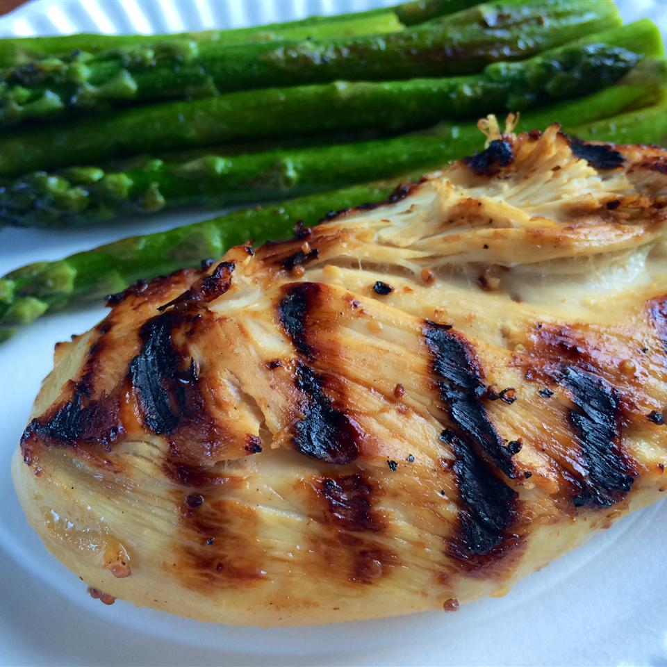

Homepage
Unbelievable Chicken

This unusual combination of common ingredients is fabulous! Everyone who tastes it asks me to share the recipe. You will love it and the many compliments you get--I promise!
Believe it. This apple cider vinegar and olive oil chicken marinade makes the most of cider vinegar, mustard, garlic, lime juice, lemon juice, and brown sugar. "This unusual combination of common ingredients is fabulous," says LETSGGGO.
Ingredients
- ¼ cup cider vinegar
- 3 tablespoons prepared coarse-ground mustard
- 3 cloves garlic, peeled and minced
- 1 lime, juiced
- ½ lemon, juiced
- ½ cup brown sugar
- 1 ½ teaspoons salt
- ground black pepper to taste
- 6 tablespoons olive oil
- 6 skinless, boneless chicken breast halves
Directions
- In a large glass bowl, mix the cider vinegar, mustard, garlic, lime juice, lemon juice, brown sugar, salt, and pepper. Whisk in the olive oil. Place chicken in the mixture. Cover, and marinate 8 hours, or overnight.
- Preheat an outdoor grill for high heat.
- Lightly oil the grill grate. Place chicken on the prepared grill, and cook 6 to 8 minutes per side, until juices run clear. Discard marinade.